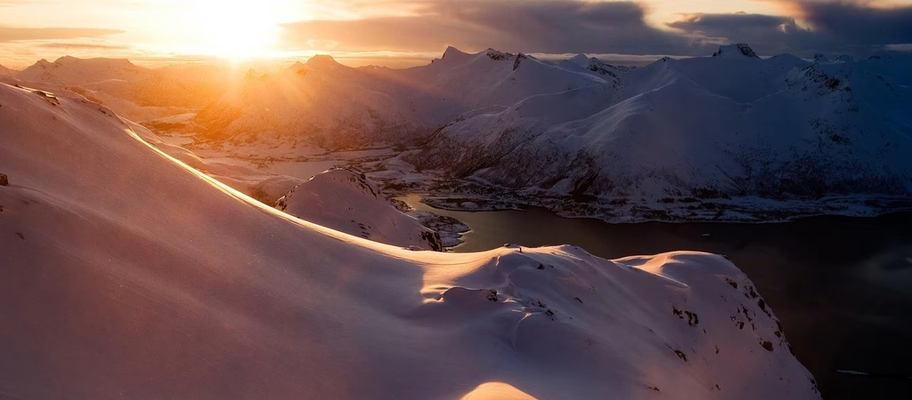

Whether you're looking for powder-filled slopes, epic freestyle parks,
or serene backcountry trails, the world is full of amazing places to snowboard.
In this guide, we highlight some of the best snowboarding destinations for
every skill level.

Destinations In Europe
Zermatt (Switzerland):
Known for its high-altitude snowboarding and breathtaking views of the
Matterhorn. Zermatt has year-round snowboarding, cross-border skiing with
Italy, and luxury accommodations.
Zermatt’s top lift is the Alps’ highest at 3,800 metres, giving the
world’s biggest pisted vertical of 2,359 metres. Extensive snow making on
the lower slopes guarantee snow from top to bottom throughout the season.
The runs are well groomed and varied, offering both pleasure and challenge
for beginners, intermediates and experts alike.
Chamonix France
A historic and challenging destination for expert snowboarders. Chamonix is known for it's steep off-piste areas, glacier terrain, and advanced-level features.
Chamonix is a truly unique resort. Nestled beneath the highest mountains in the Alps, yet just one hour from Geneva, it offers some of the toughest, wildest and most exhilarating snowboarding anywhere in the world.
Snow cover can be patchy lower down in Chamonix, but most of your time will be spent at high altitude, where snow conditions are generally reliable.
With its north-facing slopes reaching almost 3300m, Les Grand Montets has a particularly good snow record and is open until early May. This end of the valley is also a known ‘snow-pocket’, with nearby Le Tour claiming to be the snowiest village in France.
St. Anton (Austria):
Famous for its après-ski and vibrant village life. Special Features: Deep powder snow, off-piste, and lots of backcountry options.
The internationally renowned Ski Arlberg extern area is a true paradise for snowboarders with its diverse slopes and numerous freeride opportunities. A total of 85 lifts allow easy access to the ski area, many of them gondolas and chairlifts, so getting up the mountain is much easier and more pleasant for snowboarders than with drag lifts.
Destinations In North America
Lake Tahoe (California/Nevada, USA):
Lake Tahoe offers a mix of steep terrain, tree runs, and wide-open bowls. Special Features: Several resorts with diverse terrain options, perfect for long runs and freestyle enthusiasts.
Lake Tahoe Ski Resorts on the South Shore are an unforgettable experience. With jaw-dropping lake views, skiable terrain for all skill levels and plenty of access to nearby lodging and shopping. Lake Tahoe actually includes multiple resorts, it has three different ones on its south side
Heavenly Moutain: Featuring 30 ski lifts that access 34 miles of wide-open groomers, 1,600-foot double black diamond plungers, and all the tree skiing you could ever ask for, Heavenly Mountain Resort has terrain to keep skiers and snowboarders of all skill levels shredding from dawn to dusk.
Sierra-at-tahoe: In between the storms, you can spend your day lapping the terrain parks, filled with some of the most perfectly sculpted jumps in the region. In addition, they have the only Superpipe on the South Shore. Sierra-at-Tahoe has long been known as a gathering place for families of all ages to come together and play.
Kirkwood Mountain: Expect steep terrain, big bowls, chutes galore and lots of snow. With a base elevation of 7,800 feet, Kirkwood receives more snowfall than any other Lake Tahoe ski resort. With terrain to satisfy skiers and snowboarders of all skill levels, Kirkwood also has some of the most advanced and varied skiing terrains in the Tahoe basin.
Park City (Utah, USA):
This resort is spread across 7300 acres, 11 square miles, 41 chairlifts, and 2 villages. There is something for everyone at Park City Mountain. Endless groomers, pow stashes, and glades call all those who love to explore new terrain.
And with iconic scenery including ski runs right into Historic Old Town and the 10,000 foot Jupiter Peak, you'll never not have a chance to make a memory. Freestyle skiers and boarders are welcome too with 7 terrain parks spread out across the mountain and I Ride Park City boosting the excitement.
Whistler Blackcomb (Canada):
Whistler and Blackcomb are two side-by-side mountains, offering over 200 marked runs, 8,171 acres of terrain, 16 alpine bowls and 3 glaciers combined, receiving 1,036 centimetres (408 inches) of snow on average annually
We are home to one of the longest ski seasons in North America, offering world-class terrain for all levels of snowboarders. Special Features: Huge backcountry areas, multiple terrain parks, and stunning mountain views.